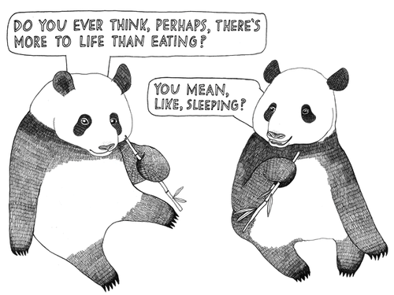

    <section>

    <div class="layout-semibreve">
    
        {{ include nav-breadcrumbs.html }}
        
        <div class="layout-centered">
            
            <h4>Life, Liberty and the Pursuit...</h4>
            
            
            
                <p>Apologies, but the page you requested could not be found. Perhaps searching will help. Or napping.</p>
                <p class="field">
    <input type="search" placeholder="Search" role="search" /><input type="submit" value="Go" />
</p>

                
        </div>
        
     <div class="layout-semibreve">
     
     <p class="isolate text-whisper">Image Credit: <a href="http://www.mischiefchampion.com/style/p/2010/Aug/life_questions">Mischief Champion</a></p>
     
     </div>
    
                   
</section>